SCENE 01
Tomorrow was the pond parade. Ivy and Pip had only : snapped boards, a torn sail, and half a boat. Bean stayed beside them.
A COMIC & AN ENGLISH STORY
A grand plan. A tiny captain.
13 scenes · 10 words · Tap a highlighted word for its meaning.
SCENE 01
Tomorrow was the pond parade. Ivy and Pip had only : snapped boards, a torn sail, and half a boat. Bean stayed beside them.
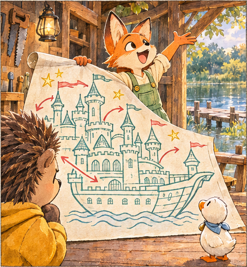
SCENE 02
“We can build a ship!” Ivy said. “ towers! Flags! A castle that floats!” Pip wasn’t so sure.
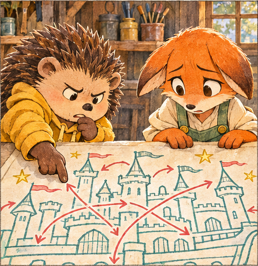
SCENE 03
“These arrows me,” Pip said. “Does the kitchen go inside the tower, or does the tower go inside the kitchen?” Ivy’s ears slowly drooped.
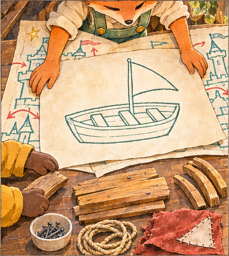
SCENE 04
Ivy covered the castle with a blank sheet. “Let’s the problem one piece at a time. First, a boat that floats.” Pip sorted the boards.
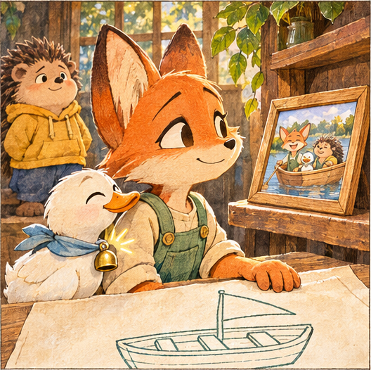
SCENE 05
Bean’s little bell Ivy of their first trip: two friends, one duck, and a picnic. “There’s room for everyone,” she said.
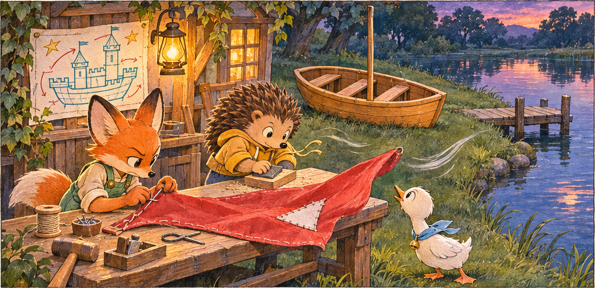
SCENE 06
By dusk, only the red sail was left to fit. Bean kept a eye on it. The corner began to lift.
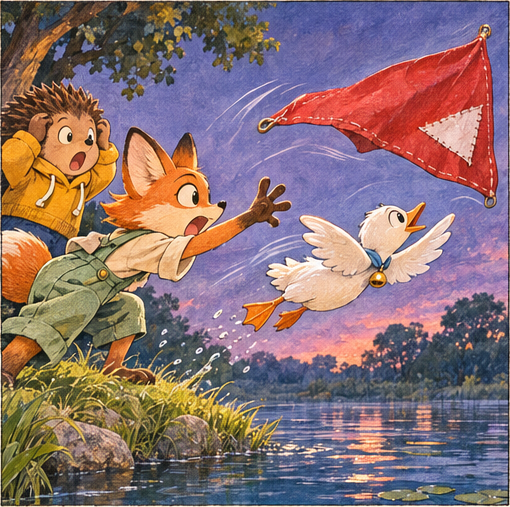
SCENE 07
Then the whole sail lifted. Ivy grabbed empty air. Bean jumped.
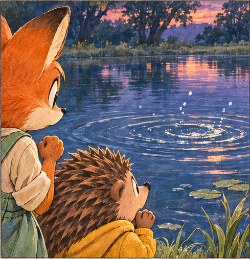
SCENE 08
SPLASH! Ivy ran to the edge. “Bean?” Only circles answered.
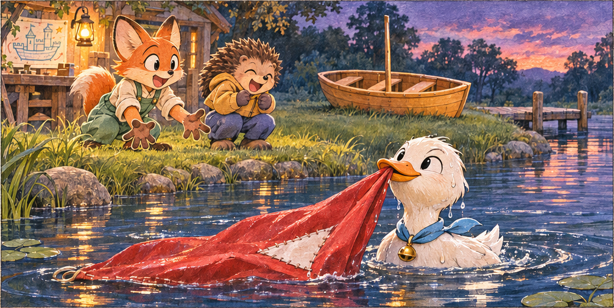
SCENE 09
A white head popped up. A red corner hung from Bean’s beak. Pip’s knees went wobbly with relief. Bean looked extremely pleased with himself.
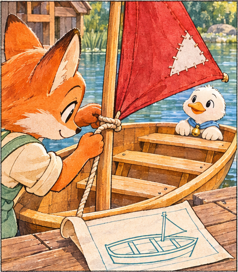
SCENE 10
In the morning, they fastened the sail. At last, the boat was . Nothing on their little plan was missing.
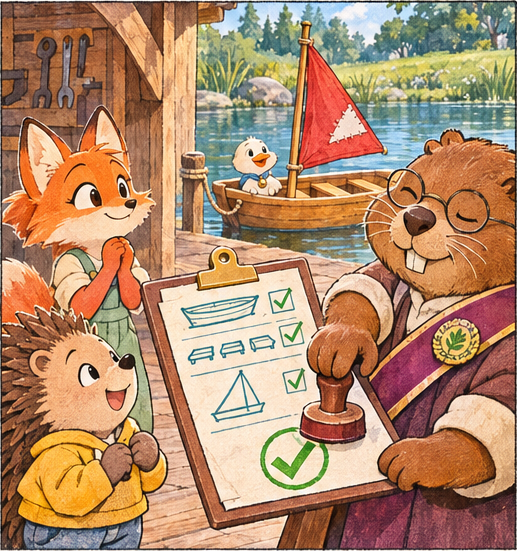
SCENE 11
Mayor Moss checked the seats, the hull, and the sail. Then she stamped the form. “I this boat for the parade.”
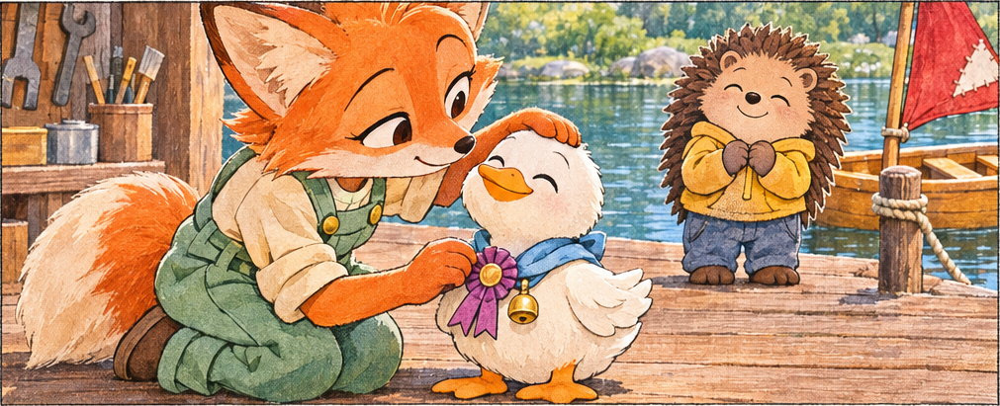
SCENE 12
The mayor offered Ivy a ribbon. Ivy gently pinned it to Bean’s scarf. “For your ,” she said. Bean leaned into her hand.
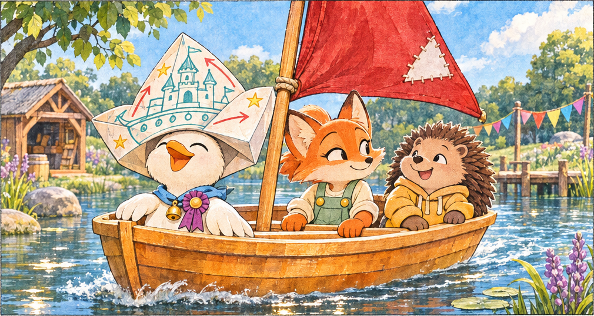
SCENE 13
They sailed into the parade. The castle plan was a captain’s hat now. Their boat was small. Bean’s hat was not.
start to deal with a situation or problem in a certain way
officially agree to or accept as satisfactory
very good, beautiful, or deserving to be admired
the remains of something that has been badly damaged or destroyed
to make someone remember
watching someone or something closely; alert and vigilant
to think of an image or event in your head
to make something unclear
having all of the parts that are needed
loyalty and affection
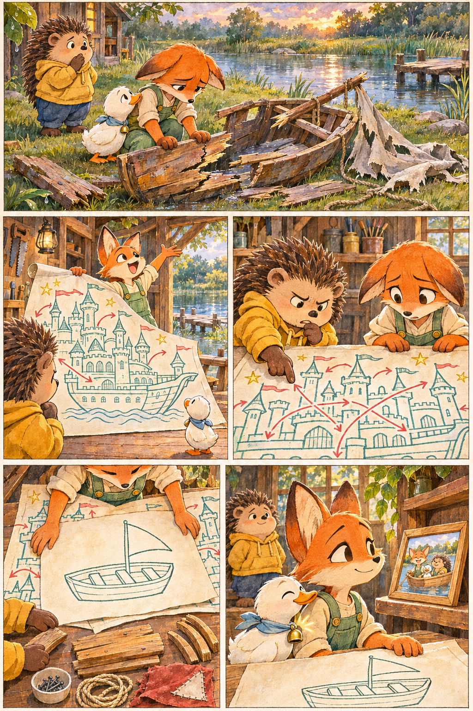
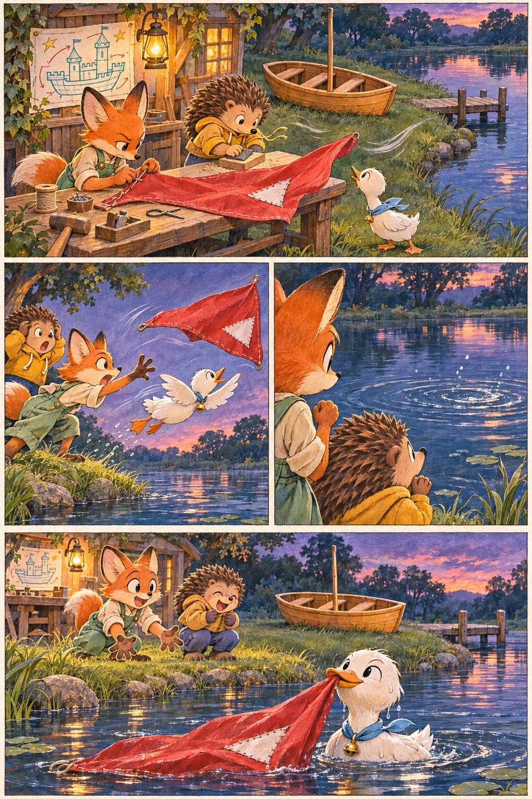
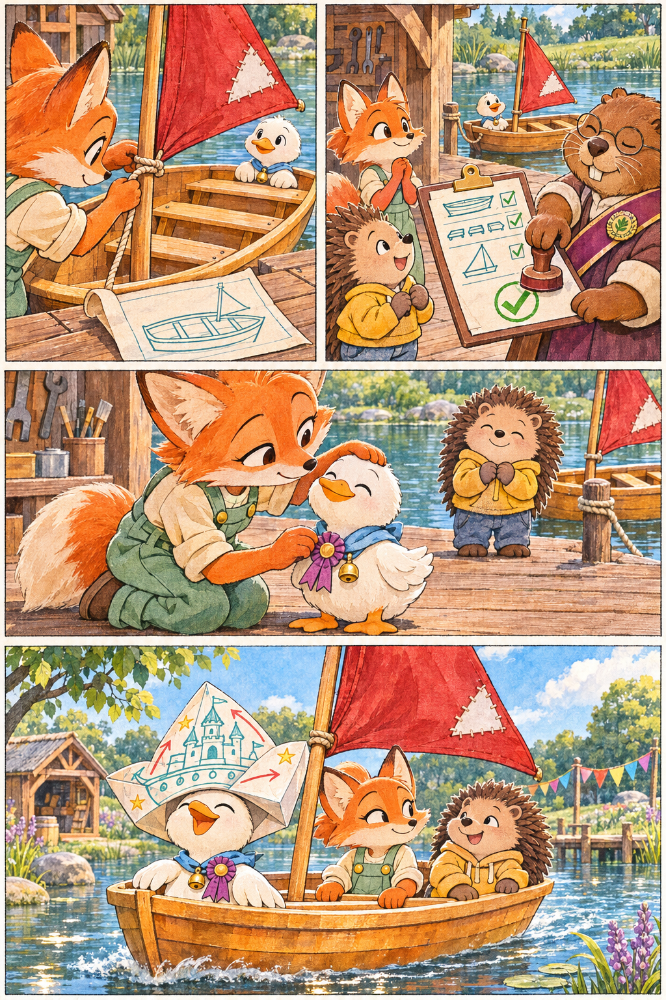